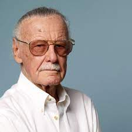
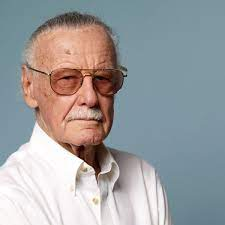
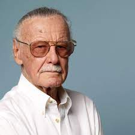

Marvel Studios, LLC (originally known as Marvel Films from 1993 to 1996) is an American film and television
production company that is a subsidiary of Walt Disney Studios, a division of The Walt Disney Company.
Marvel Studios is known for the production of the Marvel Cinematic Universe films, based on characters
that appear in Marvel Comics publications. Marvel Studios is also producing television series airing on
Disney+, and is overseeing production for remaining Marvel Television series following its folding into
Marvel Studios.
The Marvel Cinematic Universe (MCU) is an American media franchise and shared universe centered on a series
of superhero films produced by Marvel Studios. The films are based on characters that appear in American
comic books published by Marvel Comics. The franchise also includes television series, short films, digital
series, and literature. The shared universe, much like the original Marvel Universe in comic books, was
established by crossing over common plot elements, settings, cast, and characters.
The first MCU film is Iron Man (2008), which began the films of Phase One culminating in the crossover
film The Avengers (2012). Phase Two began with Iron Man 3 (2013) and concluded with Ant-Man (2015). Phase
Three began with Captain America: Civil War (2016) and concluded with Spider-Man: Far From Home (2019). The
first three phases in the franchise are collectively known as "The Infinity Saga". The films of Phase Four
began with Black Widow (2021).
Marvel Television expanded the universe to network television with Agents of S.H.I.E.L.D. on ABC in 2013,
before further expanding to streaming television on Netflix and Hulu, and cable television on Freeform. They
also produced the digital series Agents of S.H.I.E.L.D.: Slingshot. Marvel Studios began producing their own
television series for streaming on Disney+, starting with WandaVision in 2021 as the beginning of Phase Four.
The MCU also includes tie-in comics published by Marvel Comics, a series of direct-to-video short films called
Marvel One-Shots, and viral marketing campaigns for the films featuring the faux news programs WHIH Newsfront
and TheDailyBugle.net.
LATEST UPDATES :
Doctor Strange in the Multiverse of Madness
is an upcoming American superhero film
based on the Marvel Comics character Doctor Strange. Produced by Marvel Studios and distributed by Walt Disney Studios
Motion Pictures, it is intended to be the sequel to Doctor Strange (2016) and the 28th film of the Marvel Cinematic
Universe (MCU). The film is directed by Sam Raimi, written by Michael Waldron, and stars Benedict Cumberbatch as Stephen
Strange, alongside Elizabeth Olsen, Chiwetel Ejiofor, Benedict Wong, Xochitl Gomez, Michael Stuhlbarg and Rachel McAdams.
In the film, Strange and his allies travel into the multiverse to face a mysterious new adversary.
Doctor Strange director and co-writer Scott Derrickson had plans for a sequel by October 2016. He signed to return as
director in December 2018, when Cumberbatch was confirmed to return. The film's title was announced in July 2019 along
with Olsen's involvement, while Jade Halley Bartlett was hired to write the film that October. Derrickson stepped down
as director in January 2020, citing creative differences, with Waldron and Raimi joining the next month and starting over.
Filming began in November 2020 in London but was put on hold in January 2021 due to the COVID-19 pandemic. Production
resumed by March 2021 and concluded in mid-April in Somerset. Shooting also occurred in Surrey and Los Angeles.
Doctor Strange in the Multiverse of Madness is scheduled to be released in the United States on May 6, 2022, as part of
Phase Four of the MCU.
Doctor Strange in the Multiverse of Madness is scheduled to be released in the United States on May 6, 2022, in IMAX.
It was originally set for release on May 7, 2021, but was pushed back to November 5, 2021, due to the COVID-19 pandemic,
before it was further shifted to March 25, 2022 after Sony rescheduled Spider-Man: No Way Home to November 2021.In October
2021, it was shifted once more to its current May 2022 date.[94] The film will be part of Phase Four of the MCU.
Moon Knight
is a fictional character appearing in American comic books
published by Marvel Comics. Created by writer Doug Moench and artist Don Perlin, the character first appeared in Werewolf by
Night #32 (August 1975).
The son of a rabbi, Marc Spector served as a Marine and briefly as a CIA operative before becoming a mercenary alongside his
friend Jean-Paul "Frenchie" DuChamp. During a job in Sudan, Spector is appalled when ruthless fellow mercenary Raoul Bushman
attacks and kills archeologist Dr. Alraune in front of the man's daughter and colleague, Marlene Alraune. After fighting
Bushman and being left for dead, a mortally wounded Spector reaches Alraune's recently unearthed tomb and is placed before a
statue of the Egyptian moon god Khonshu. Spector dies, then suddenly revives, fully healed. He claims Khonshu wants him to be
the "moon's knight", the left "Fist of Khonshu", redeeming his life of violence by now protecting and avenging the innocent.
While early stories imply Spector is merely insane, it is later revealed Khonshu is real, one of several entities from the
Othervoid (a dimension outside normal time and space) once worshipped by ancient Earth people. On his return to the United
States, Spector invests his mercenary profits into becoming the crimefighter "Moon Knight", aided by Frenchie and Marlene
Alraune, who becomes his lover and eventually the mother of his daughter. Along with his costumed alter ego, he primarily
uses three other identities to gain information from different social circles: billionaire businessman Steven Grant, taxicab
driver Jake Lockley, and suited consultant Mr. Knight.
It is later revealed Moon Knight has dissociative identity disorder (incorrectly referred to as schizophrenia in some stories)
and that the alters known as Grant and Lockley originally manifested during his childhood. Other subsequent identities
(including an unnamed red-haired little girl and astronaut) have briefly emerged at other points during his adulthood.
It is debated in different stories whether Spector's has genuine DID due to childhood trauma or if his similar symptoms
are the result of "brain damage" caused by his psychic connection to Khonshu, a connection compelling his personality to
shift between the four major aspects of the moon god's multi-faceted nature ("the traveler", "the pathfinder", "the embracer"
, and "the defender of those who travel at night"). Khonshu claims he created a psychic connection with Marc Spector when the
latter was a young boy, decades before calling him to become Moon Knight.
In most of his stories, Moon Knight has no supernatural abilities beyond occasional visions of mystical insight. He relies
on athletic ability, advanced technology, expert combat skills, and a high tolerance for pain based on willpower, training,
and experience. Since becoming Moon Knight, there have been multiple occasions when the character has died only to then be
resurrected by Khonshu, implying he may now be effectively immortal until the moon god's protection is revoked (whether
Khonshu has limitations on how often he can resurrect Spector is unknown). For a time, Moon Knight's strength and resistance
to injury could reach superhuman levels depending on the phases of the moon, but this ability later vanished.
Morbius
is a 2022 American superhero film featuring the Marvel Comics character
Morbius, the Living Vampire, produced by Columbia Pictures in association with Marvel. Distributed by Sony Pictures Releasing, it is
the third film in Sony's Spider-Man Universe. Directed by Daniel Espinosa and written by Matt Sazama and Burk Sharpless, it stars
Jared Leto as Michael Morbius alongside Matt Smith, Adria Arjona, Jared Harris, Al Madrigal, and Tyrese Gibson. In the film, Morbius
becomes a vampire after curing himself of a rare disease.
After announcing plans for a new shared universe of films inspired by Spider-Man characters beginning with Venom (2018), Sony began
developing a film based on Morbius. Sazama and Sharpless had written a script by November 2017, and Leto and Espinosa officially
joined in June 2018. Work began in earnest at the end of the year with further casting, ahead of production starting in London in
February 2019. Filming was confirmed to have been completed by June 2019.
Morbius premiered at the Plaza Carso in Mexico City on March 10, 2022, and is scheduled to be released in the United States on April 1
, 2022, after being delayed several times from an initial July 2020 date primarily due to the COVID-19 pandemic. Early reactions to
the film were negative with criticism for its plot, CGI, and post-credits scenes.
One of the most compelling and conflicted characters in Sony Pictures Universe of Marvel Characters comes to the big screen as Oscar®
winner Jared Leto transforms into the enigmatic antihero Michael Morbius. Dangerously ill with a rare blood disorder and determined
to save others suffering his same fate, Dr. Morbius attempts a desperate gamble. While at first it seems to be a radical success, a
darkness inside him is unleashed.
Suffering from a rare blood disease, Dr. Michael Morbius tries a dangerous cure that afflicts him with a form of vampirism.
THE WHOLE TEAM :
THE MAIN CREATOR OF MARVEL :

Stan Lee
(December 28, 1922 - November 12, 2018) was an American comic book writer, editor, publisher, and producer. He rose
through the ranks of a family-run business called Timely Publications which would later become Marvel Comics. He was the primary
creative leader for two decades, leading its expansion from a small division of a publishing house to a multimedia corporation that
dominated the comics and film industries.
In collaboration with others at Marvel—particularly co-writers/artists Jack Kirby and Steve Ditko—he co-created iconic characters,
including superheroes Spider-Man, the X-Men, Iron Man, Thor, the Hulk, Ant-Man, the Wasp, the Fantastic Four, Black Panther, Daredevil,
Doctor Strange, Scarlet Witch, and Black Widow. These and other characters' introductions in the 1960s pioneered a more naturalistic
approach in superhero comics, and in the 1970s Lee challenged the restrictions of the Comics Code Authority, indirectly leading to
changes in its policies. In the 1980s he pursued the development of Marvel properties in other media, with mixed results.
Following his retirement from Marvel in the 1990s, Lee remained a public figurehead for the company, and frequently made cameo
appearances in films and television shows based on Marvel characters, on which he received an executive producer credit. He continued
independent creative ventures into his 90s until his death in 2018. Lee was inducted into the comic book industry's Will Eisner Award
Hall of Fame in 1994 and the Jack Kirby Hall of Fame in 1995. He received the NEA's National Medal of Arts in 2008.
In September 2012, Lee underwent an operation to insert a pacemaker, which required cancelling planned appearances at conventions.
Lee eventually retired from convention appearances by 2017.
On July 6, 2017, Joan Boocock, his wife of 69 years, died of complications from a stroke. She was 95 years old.
Lee died on November 12, 2018, at the age of 95, one month before his 96th birthday, at Cedars-Sinai Medical Center in Los Angeles,
after being rushed there for a medical emergency earlier in the day.[46][47][48] Lee had previously been hospitalized for pneumonia
in February of that year.[49] The immediate cause of death listed on his death certificate was cardiac arrest with respiratory
failure and congestive heart failure as underlying causes. It also indicated that he suffered from aspiration pneumonia. His body
was cremated and his ashes were given to his daughter.
Roy Thomas, who succeeded Lee as editor-in-chief at Marvel, had visited Lee two days prior to his death to discuss the upcoming
book The Stan Lee Story and stated "I think he was ready to go. But he was still talking about doing more cameos. As long as he had
the energy for it and didn't have to travel, Stan was always up to do some more cameos. He got a kick out of those more than
anything else.


 
